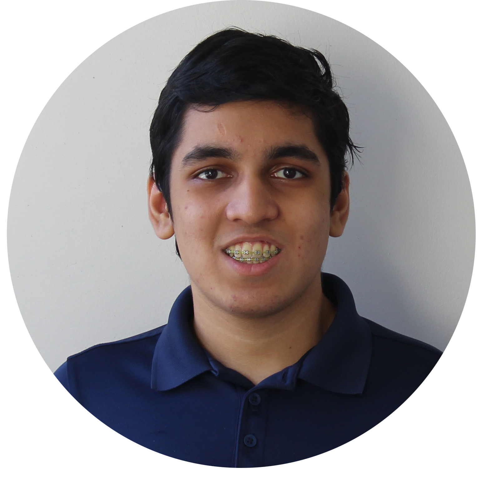
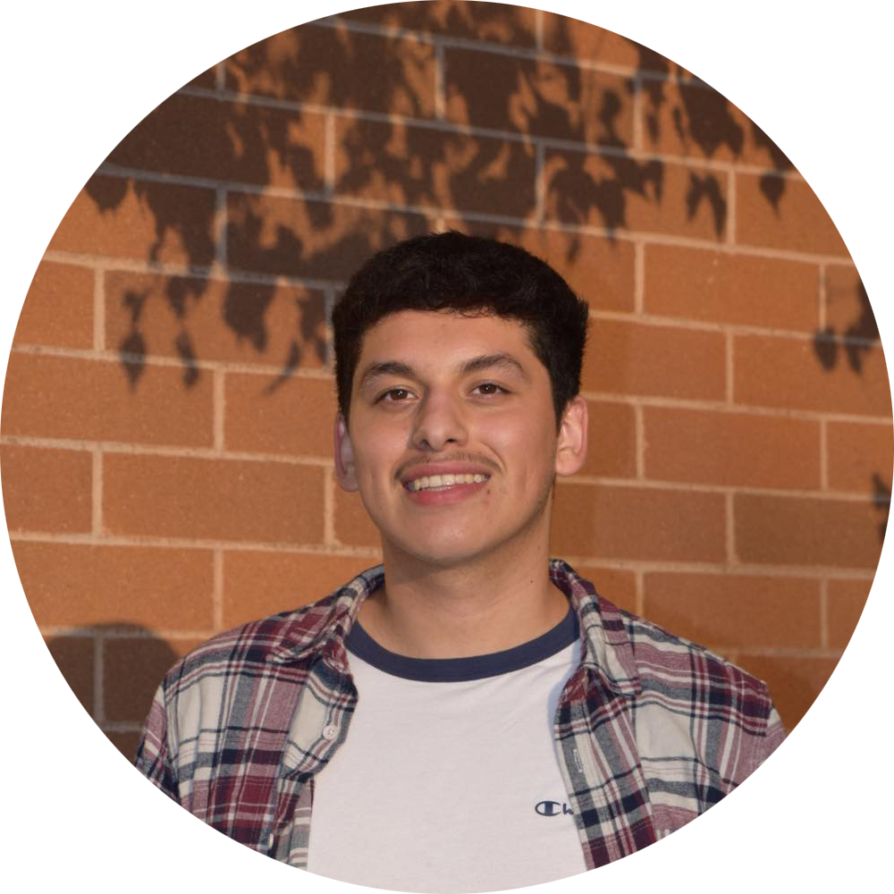
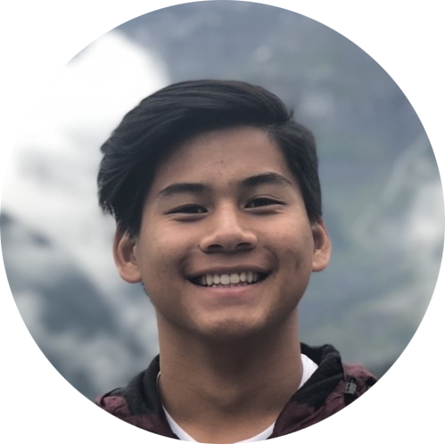
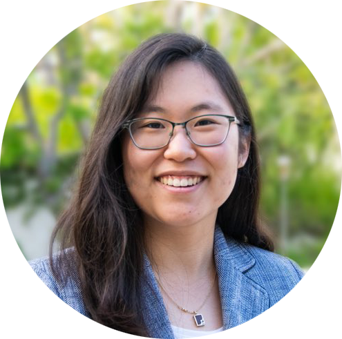
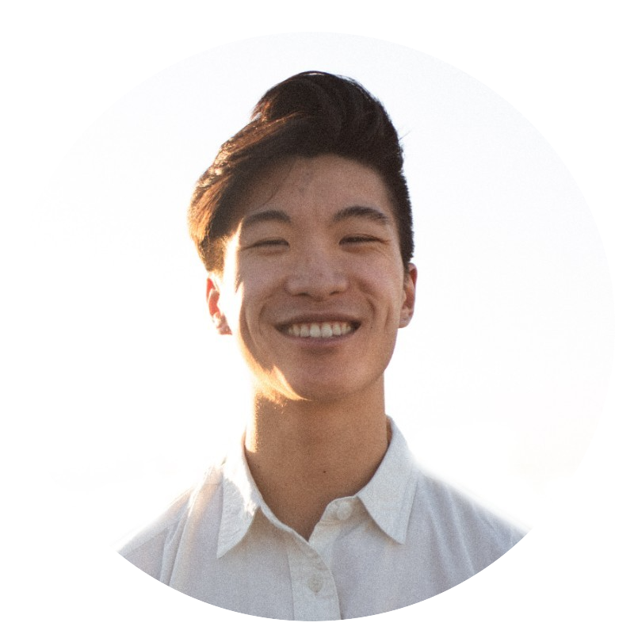
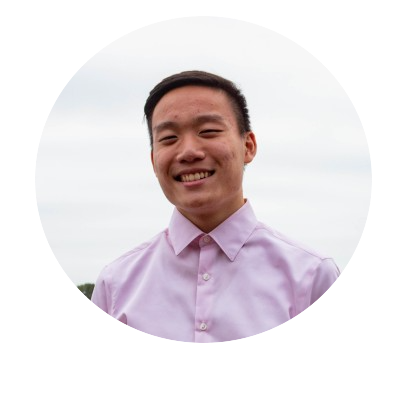

HOME
Pocket Racer Team
It's safe to say that building autonomous vehicles is a difficult task to be completed by one person alone. Meet the team of individuals who have come together to align their passions and innovate technology.
Dr. Dennis Hong
Principal Investigator
My name is Dr. Dennis Hong, and I am not only a TED alumnus, but also the Professor and Founding Director of the Robotics & Mechanisms Laboratory of the Mechanical & Aerospace (RoMeLa) Engineer Department at the University of California, Los Angeles.
My research primarily focuses on robot locomotion and automation, autonomous vehicles, and humanoid robots. I am also recognized as the first inventor for the world’s first car that can be driven by the blind. In fact, the Washington Post magazine has nicknamed me as “The Leonardo da Vinci of robots.”
Beyond robotics, I enjoy two things: cooking meals as a gourmet chef, and performing annual charity magic shows and lectures on the science of magic.
Jesse Cha
Lead Autonomous Racing Pilot
My name is Eun Sang (Jesse) Cha, and I am a University of California, Los Angeles (UCLA) Mechanical Engineering PhD student based in Bel Air, Los Angeles.
I've always had a passion for all things engineering – namely building fully autonomous self-driving vehicles. In fact, my passion all started at my condo lounge when my roommate said, "Take racing to the next level... by going autonomous." I replied with "Dope nasty."
Four years later, the autonomous racing project is now my PhD research topic under the tuleage of Professor Dennis Hong.
Outside of racing with code, I spend a lot of my time playing golf and doing pilates. I'm also married to my lovely wife, Lauren – of whom has always supported my racing passion.
Curriculum Development Team
Building the curriculum needed to allow undergraduate students to build their own self-driving autonomous vehicles is no easy feat as well. Meet the team of undergraduate students who have dedicated their time to make the small scale robots truly open-source.
Angela Salazar
Pepperdine Robotics Club President
My name is Aaron Kuo, and I am fourth year undergraduate studying Electrical Engineering at UCLA. For these past two years, I've been an Officer Board of Institute of Electrical and Electronics Engineers (IEEE) at UCLA as an Aircopter Co-Lead during 2020 - 2021, and as R&D Lead during 2021 - 2022.
I enjoy extending the skills and concepts I've learned in courses in the real world, which is why I've been heavily involved in IEEE throughout my college experience. From Aircopter to Micromouseto Digital Audio Visualizer, I've enjoyed every second of my timewith the IEEE projects offered at UCLA.
My passion for electrical engineering has also paved the way formy interest in computers as well. Assembling computers, building keyboards, playing video games, coding, you name it. Outside of the house, I love playing and watching just about all sports, namely hockey, football, basketball, and soccer.
Kittimate Chulajata
Pepperdine Robotics Club Vice President
My name is Jeremy Louie, and I am a fourth-year undergraduate studying Mathematics of Computation student at UCLA.
I’ve always had a strong interest in extending the academia I learned beyond the classroom. That’s why I’ve engaged in projects such as examining the accuracy in estimating two ordinary differential equations using the Range Kutta Method.
While programming has given me many sleepless nights, it has also given rise to my hobby as a barista. In fact, you can find me making up coffee and tea concoctions on the weekends. Beyond that, I’m also passionate in photography – a hobby I hope to make into a side career as a professional.
Above all, I’m always willing to keep up with the rapidly changing pace of technology by learning something new everyday.
Zak Mossing
Pepperdine Robotics Club Secretary
My name is Aaron Kuo, and I am fourth year undergraduate studying Electrical Engineering at UCLA. For these past two years, I've been an Officer Board of Institute of Electrical and Electronics Engineers (IEEE) at UCLA as an Aircopter Co-Lead during 2020 - 2021, and as R&D Lead during 2021 - 2022.
I enjoy extending the skills and concepts I've learned in courses in the real world, which is why I've been heavily involved in IEEE throughout my college experience. From Aircopter to Micromouseto Digital Audio Visualizer, I've enjoyed every second of my timewith the IEEE projects offered at UCLA.
My passion for electrical engineering has also paved the way formy interest in computers as well. Assembling computers, building keyboards, playing video games, coding, you name it. Outside of the house, I love playing and watching just about all sports, namely hockey, football, basketball, and soccer.
Isabelle Nam
Pepperdine Robotics Club Treasurer
My name is Angela, and I am third year undergraduate student studying Computer Science and Mathematics at Pepperdine University.
I enjoy learning about the various ways machine learning is applicable to real world problems, My passion for computer science intersects with a passion to keep people safe on the ever growing digital landscape of the internet. Machine learning and cybersecurity go hand in hand, and I hope to work in a field where both are implemented to make a safer, better digital experience.
Outside of the classroom, you can usually find me listening to some Taylor Swift and playing some intense rounds of Tetris 99!
-->
Contributors
For as challenging as a project as Pocket Racers, we have had many students contribute their time in an effort to realize our goal of making autonomous radio control cars truly autonomus and accessible. Unfortunately, not all of these students have continued their time as part of Pocket Racers due to other commitments. Nonetheless, their work should still be recognized. Here are the students who have graciously committed their time.
Raj Piskala
Website Developer

Victor Morales
Chassis Engineer

Eric Wong
CAD Designer & Chassis Engineer

Rosa Son
CAD Designer & Chassis Engineer

Jeremy Louie
Web & Curriculum Developer

Aaron Kuo
IEEE Aircopter Lead & Curriculum Developer
